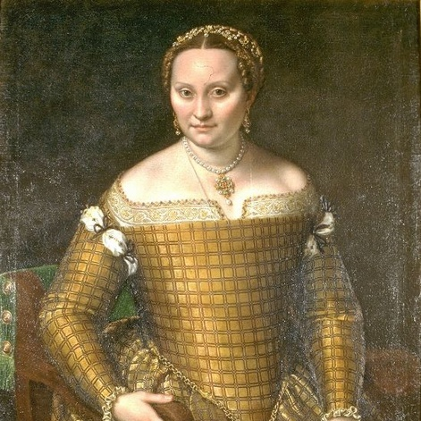

Дорогие женщины!
От всей души поздравляю вас с Международным женским днем! Вы — нежные и сильные, умные и красивые, мудрые и добрые. Вы много делаете для того, чтобы наш мир был более добрым и справедливым, а наши жизни — яркими и насыщенными. Я желаю вам здоровья, любви, счастья и успехов во всех начинаниях. Пусть ваши мечты сбываются, а дни наполнены радостью и улыбками! С наилучшими пожеланиями в этот замечательный день для вас подготовил небольшую выставку с картинами известных женщин-художниц!
Фрида Кало
«Две Фриды»
"Две Фриды" ("Las Dos Fridas" на испанском языке) - это картина Фриды Кало, созданная в 1939 году. На ней изображены две Фриды, сидящие лицом к лицу на стульях, держащиеся за руки и соединенные своими сосудами. Одна Фрида одета в традиционный мексиканский костюм, а другая в европейское платье. Картина рассматривается как символ женской силы, солидарности и самопознания. Одна Фрида держит в руке инструмент, символизирующий ее творческую сторону, а другая - открытый инструмент для сердечной операции, символизирующий ее физическую и эмоциональную боль. Это важное произведение мексиканского национального искусства.
READ MORE

Софонисба Ангиссола
«Портрет Бьянки Понцони»
Картина Софонисбы Ангиссолы "Портрет Бьянки Понцони Ангиссолы" изображает мать художницы во всей красе, сидящую на стуле в ярко-голубом платье с драгоценными украшениями на шее и волосах. На портрете отчетливо видны мельчайшие детали одежды, драгоценные камни, волосы и даже тонкие линии на пальцах рук. Картина считается одним из наиболее реалистичных и красивых портретов эпохи Возрождения.
READ MORE
Мари Элизабет Луиза Виже-Лёбрен
«Портрет Марии-Антуанетты»
На картине "Портрет Марии-Антуанетты" Мария-Антуанетта изображена в белом платье с цветочным узором, стоящая на фоне зеленой занавески и держащая в руке кисть и палитру. Художница Мари Элизабет Луиза Виже-Лёбрен передала ее достоинство и благородство, используя свет и тени, чтобы подчеркнуть особенности лица и внешности королевы, а также ее позу и жесты, чтобы передать ее характер. Этот портрет является одним из самых известных произведений искусства XVIII века.
READ MORE

Мэри Кэссетт
«Купание ребёнка»
На картине Мэри Кэссетт "Купание ребёнка" изображена женщина, которая держит младенца в ванной. Женщина изображена спокойной и преданной, а младенец выглядит милым и уязвимым. Окружающая обстановка проста, но теплая и уютная, с мягким светом и приглушенными цветами. Эта картина является одной из наиболее известных работ Мэри Кэссетт, которая специализировалась на изображении женщин и детей в повседневной жизни.
READ MORE
Сюзанна Валадо́н
«Закидывание сети»
Сюзанн Валадон была влюблена в молодого художника Андре Ютте, который был ее любовником и другом ее сына, и они поженились в 1914 году. Картина "Закидывание сети", написанная в том же году, изображает обнаженного Ютте в трех разных позах, воспроизводящих один и тот же жест. Он передает молодость и силу, особенно на сцене переноски сети, которая служит предлогом для изображения напряженного тела. Первые две позы мужчина опирается на левую ногу, подчеркивая его атлетическое тело и эротический характер композиции.
READ MORE
Зинаида Серебрякова
«За туалетом»
Художница Зинаида Серебряникова написала картину "За туалетом", на которой изображена женщина, смотрящая на себя в зеркало и расчесывающая волосы. В композиции присутствует необычный мотив повторения свечи и её отражения, что придает картины оригинальности и остроумности. Колорит картины насыщен жизнерадостными тонами, особенно передний план, где изображены предметы на туалетном столике. Женская фигура выполнена в тёплых тонах, связывающих яркие цвета переднего плана с фоном. Исполнение полотна было многосеансным и характеризуется тщательной работой с деталями и цветом.
READ MORE